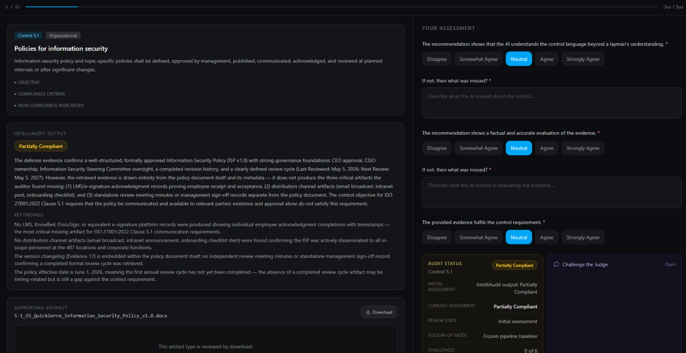
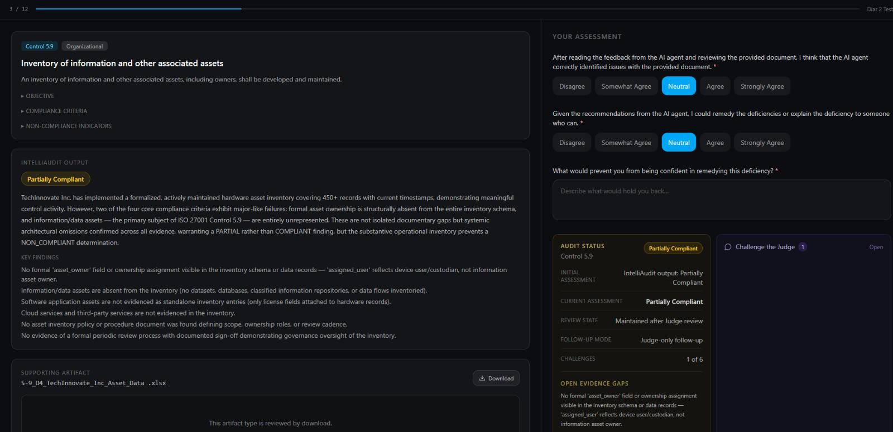

IntelliAudit: Using Large Language Models to Evaluate Audit Controls
IT audits are labor-intensive, evidence-heavy processes that require trained professionals to evaluate organizational controls across a wide range of artifact types. While prior work has explored LLM integration in compliance and security assurance workflows, no published system has specifically targeted the evidence evalua- tion phase of IT auditing as a structured, explainable, and human- supervised task. This paper presents IntelliAudit, a multi-agent LLM pipeline designed to assist auditors in assessing the compliance status of organizational controls against the ISO/IEC 27001:2022 standard. IntelliAudit decomposes control assessment into four co- operating agents: a Retriever, which performs adaptive evidence search over an organizational artifact corpus; an Auditor, which con- ducts the primary requirement-level evaluation; a Defender, which challenges adverse findings by seeking mitigating or overlooked evi- dence; and a Judge, which performs independent adjudication when the Auditor and Defender disagree. The system is implemented as a conversational, human-in-the-loop tool that preserves auditor judgment as the authoritative decision-making authority. We evalu- ate IntelliAudit against a benchmark of 15 ISO 27001:2022 controls spanning policy documents, structured spreadsheets, images, and video artifacts, using a cross-model validation approach with Ope- nAI GPT-5-Nano and Claude Sonnet 4.5, supplemented by a human survey of practicing auditors and compliance professionals. Our results demonstrate that both models successfully evaluated all artifact types within their context window constraints, and that the multi-agent architecture produced measurably stronger reasoning outputs than the single-agent ablation condition. These findings suggest that structured, retrieval-grounded multi-agent pipelines are a viable and practically useful approach to LLM-assisted IT audit automation.
Survey
Our survey methodology and participant screenshots.
Methodology
We evaluated IntelliAudit using a two pronged approach designed to avoid bias from any single model or from relying purely on automated scoring. The primary pipeline ran on OpenAI's GPT-5-Nano, with its outputs on text based evidence independently cross checked by Claude Sonnet 4.5, giving us a validation layer that helps catch errors specific to either model's training or reasoning style.
We also ran an ablation study using only the Auditor agent in isolation, then presented both the full pipeline and ablated reasoning outputs side by side to human reviewers.
Because there is no objective ground truth for audit judgments, we turned to human evaluation as our benchmark. We recruited two groups: practicing auditors, and a mix of second year cybersecurity master's students and working compliance professionals, the latter group simulating someone using IntelliAudit to fix organizational gaps ahead of a real audit. The auditor group assessed whether the model's reasoning was professionally sound; the second group assessed how useful the model's output was for actually updating evidence to meet control requirements. Their responses became our human benchmark, the standard an automated system needs to meet to be useful in practice.
Across both models, every evidence artifact was evaluated successfully except video files, which exceeded context window limits.
Survey Screenshots


Datasets
Overview
IntelliAudit was evaluated against ISO/IEC 27001:2022, the current edition of the international standard for information security management. We chose this framework over alternatives like SOX/SOC because its controls are precisely and consistently worded, giving us a stable basis for evaluating LLM reasoning, and because its broad adoption across industries means our results generalize well.
Rather than testing all 93 controls in the standard, we selected a representative sample of 15, spanning policy documentation, role assignment, asset management, incident response, personnel processes, and physical and technical controls. We deliberately chose controls that required different artifact types, including text documents, spreadsheets, images, and video, since we expected, and wanted to measure, how LLM performance varies across formats.
Since real audit evidence is sensitive and rarely public, we built a simulated organization, complete with a full executive team and governance structure modeled on NIST SP 800-100 guidance, to serve as the subject of the audit. Every artifact in our dataset was grounded in this same organizational context for internal consistency.
Our dataset is organized into three tiers. Real World Data consists of publicly available authoritative sources, including the ISO/IEC 27001:2022 standard itself, the BC government's Information Security Policy, and several NIST special publications, used both as direct evidence and as seed material for generating other artifacts. Expert Crafted Data consists of artifacts built by our research team to simulate evidence that real organizations produce but rarely share publicly, such as org charts, asset inventory spreadsheets at varying compliance maturity levels, a policy testing video, and access provisioning screenshots. Synthetic Data consists of policy and procedural documents generated by Claude Sonnet 4.5, using the real world and expert crafted artifacts as seed context for each control, including the organization's security policy, business continuity plan, incident response documentation, and a three part disciplinary record chain.
The full artifact inventory is available in the following GitHub repository. For detailed information on artifacts, please refer to Appendix A of the paper.
About
Allison Wilson
Computing Sciences Doctoral Student, Faculty of Applied Sciences, Simon Fraser University.
Muhammad Tayebi
Assistant Professor of Professional Practice, School of Computing Science, Simon Fraser University.
Sina Moradi Sabet
Undergraduate Computing Science Student, Amirkabir University of Technology
Diar Shakimov
Undergraduate Computing Science Student, Simon Fraser University.
Reza Bagheri
Cyber Security Consultant, Telus Health
Panteha Shahrivar
Undergraduate Computing Science Student, Simon Fraser University.